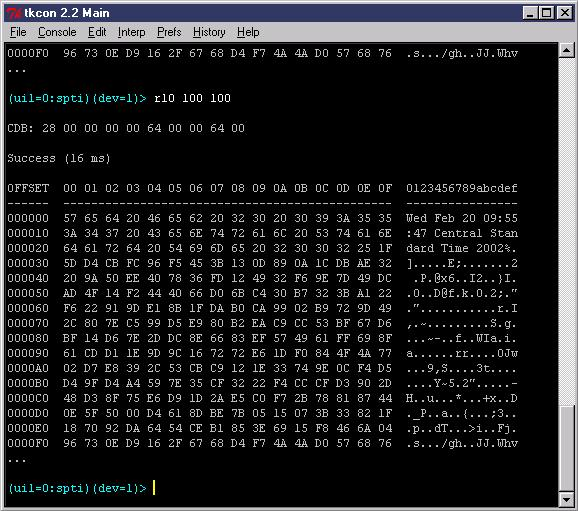
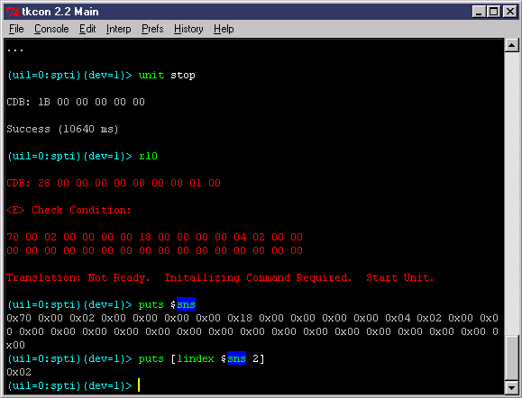

get_cdb_listThis outputs a list of all defined CDB commands. To see a sorted list, type:
lsort [get_cdb_list]To look at the options available to to a CDB command, we will look at the inquiry command at depth. We'll start with:
inquiry -helpThis produces the following output:
****************************************A lot of information is contained in this output:Command Name(s): inquiry,inq
Description: Performs a device inquiry.
Default Parm Order: pagecode, alloc
Buffer Data Sent: <None>
Buffer Data Received: <alloc> BytesParameters:
Name Range Default | Description
-----------------------------------------+----------------------------------
-evpd (0 or 1) 0x0 | Enable Vendor Product Data
-pagecode (0-0xFF) 0x0 | Page Code
-alloc (0-0xFF) 0xFF | Allocation Length in Bytes
-control_byte (0-0xFF) 0x0 | NACA | FLAG | LINK
-uil (0-?) <current> | Temporary UIL override
-dev (0-?) <current> | Temporary device index override
-ri (0-?) <current> | Temporary receive buffer override
-si (0-?) <current> | Temporary send buffer override
-dummy (0-1) 0 | Don't actually send the CDB
inquiryWith no parameters, inquiry is called with default parameters. To see what these parameters are, check "Parameters" in the help.
inq
inquiry 0 10The first command calls inquiry on page zero asking for 10 bytes (see the Default Parm Order). The second command calls inquiry on page zero with the EVPD bit set.
inquiry 0 0xff -evpd 1
inquiry -pagecode 0 -alloc 10The first command is exactly like the first command of the previous example set. The only difference is that this form is more clear and involves more typing. The second command is the same as the first and shows how parameter order is not important when the fields are "flagged".
inquiry -alloc 10 -pagecode 0
inq -pagecode 0 -alloc 10 -evpd 1
inquiry -pagecode 0 -alloc 10 -evpd 1 -dummy 1When the "dummy" flag is set, the CDB is not actually called. Instead the resulting CDB is returned.
This response contains several pieces of information:

Here we see that the CDB and Success parameters are the same. There is no buffer underrun message because we asked for 100 blocks and the target transferred all 100. If we transferred 100 blocks, why did only 256 bytes show up?
The reason is because Niagara truncated our result to the first 255
bytes. Note the "..." after the dump. Niagara prints these
three characters when it has truncated a result. The amount of information
printed by Niagara is controlled by the following command:
feedback maxlen <bytes>where <maxlen> is the maximum number of bytes you want displayed. Niagara will print either how many bytes the target returned or this number, whichever is less. Note that setting this number to a low value (such as zero), can result in improved performance because Niagara doesn't have to generate as large of a table after each command.

After stopping the drive with the unit stop CDB command, we try to do a read. This fails and the check condition and sense information is outputted*. In addition to this, the variable $sns is set to our sense data. This information is a TCL list that can be parse with list processing commands (lindex is one of these commands). Note that sense information is returned and $sns is updated only if Niagara is set to autosense mode (by default, Niagara is set to autosense mode).
Another way to update $sns is
to call request_sense (alias is sns)
yourself. Note that $sns is
not updated unless there is an error or you call sns.
catch { r10 [randlba] }The catch command executes the command and returns "0" if the command executed successfully and "1" otherwise. You can also capture the commands output into a variable like this:
catch { r10 [randlba] } out_varWhere out_var is the name of any variable you wish to capture output data to. Note that catch captures any TCL error, including syntax errors. For example:
catch { putss "hello" }Will return "1" every time...
A different approach is to define $cdberr. Whenever $cdberr is defined, Niagara will execute the code within $cdberr instead of throwing an error. Creative use of $cdberr can be used to automatically save errors to a log file or other purposes. Note that $cdberr is checked in local scope... Also, $cdberr only applies to cdb errors.
It is beyond the scope of this lesson to go into $cdberr
in great detail. Here is an example of its use, however.
Note that certain variables (such as $err
and $ec) are defined by the error system to
make error extraction more convenient:
proc rand_read {iter} {global err
set cdberr {
puts "At: [clock format [clock seconds]]"
puts $err
puts "----------------"
}do $iter {
r10 [randlba]
}
}